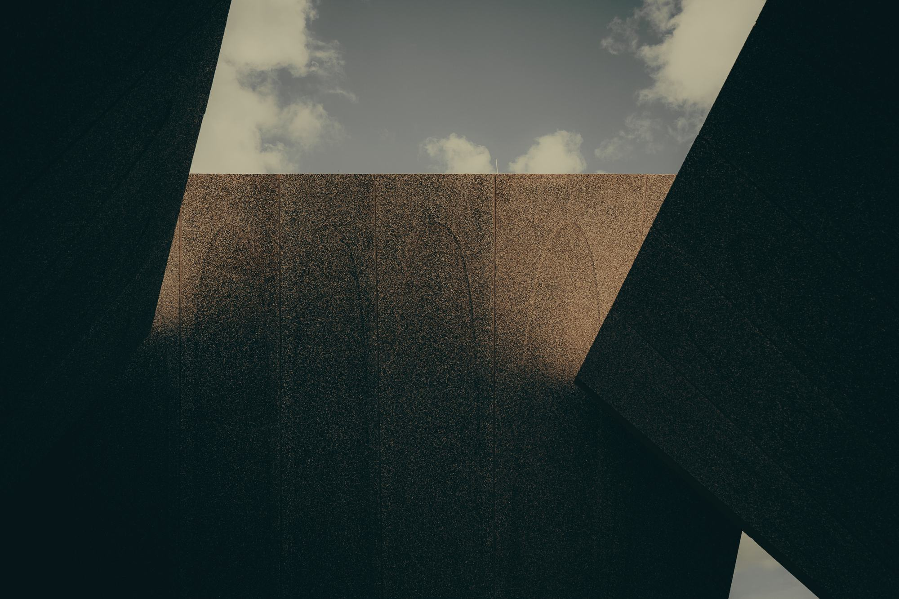
한국의 유산 · 현대적 미니멀
BOJAGIHOUSE
작은 조각을 이어, 더 넓은 세계를 감쌉니다.
- 전통× 현대
- 공예× 생활
- 한국× 세계
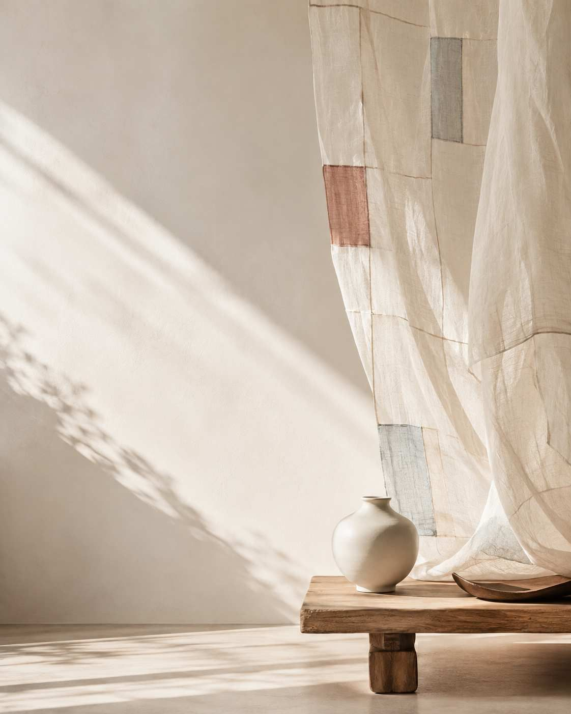
감싸고, 잇고, 나눕니다
BOJAGI HOUSE는 한국 유산의 고요한 아름다움을 세계에 전합니다. 현대적인 디자인과 일상의 사물로 다시 해석한 전통을 만나 보세요.
모든 제품에는 감싸고, 잇고, 정성껏 만드는 마음이 담겨 있습니다. 한국의 아름다움을 새롭게 경험해 보시길 바랍니다. 유산이 현대의 삶과 만나는 곳, BOJAGI HOUSE입니다.
01브랜드 소개
감싸고 잇는 전통을,
오늘의 삶으로.
BOJAGI HOUSE는 감싸고 잇는 한국의 전통을 현대의 삶에 맞게 다시 해석합니다. 사려 깊게 고른 사물과 소재, 공간을 통해 한국 유산의 고요한 아름다움을 일상의 순간으로 가져옵니다.
사물을 고르는 순간부터 감싸고, 선물하고, 나누는 순간까지 — 모든 경험이 의미 있는 연결이 되도록 설계합니다.
- 정성으로 감싸기
- 시간을 잇기
- 한국의 아름다움을 나누기
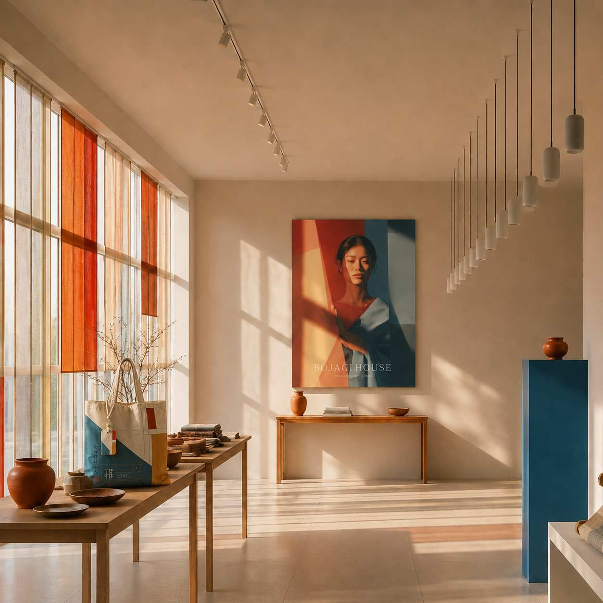
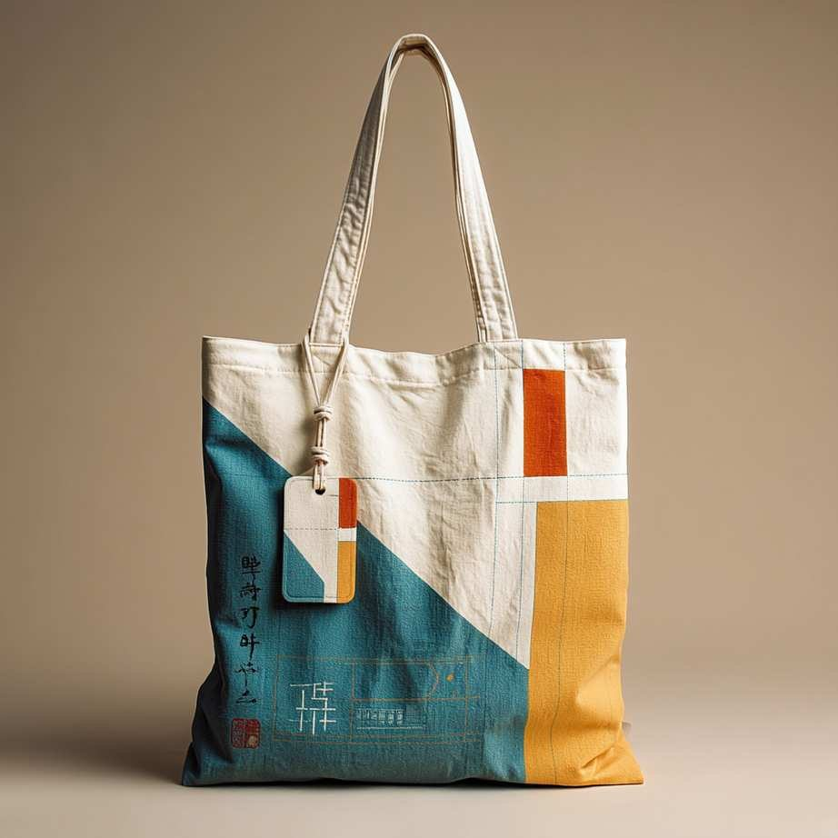
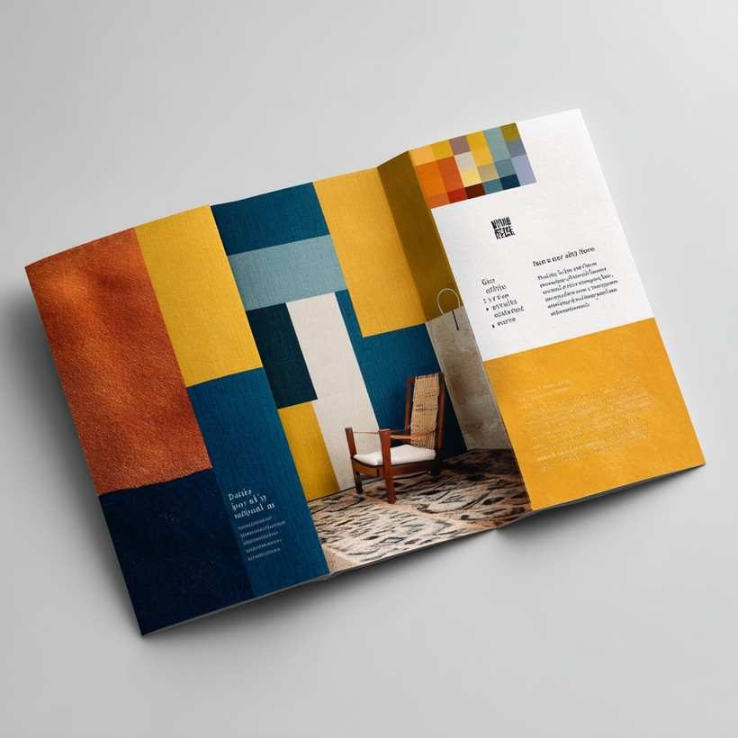
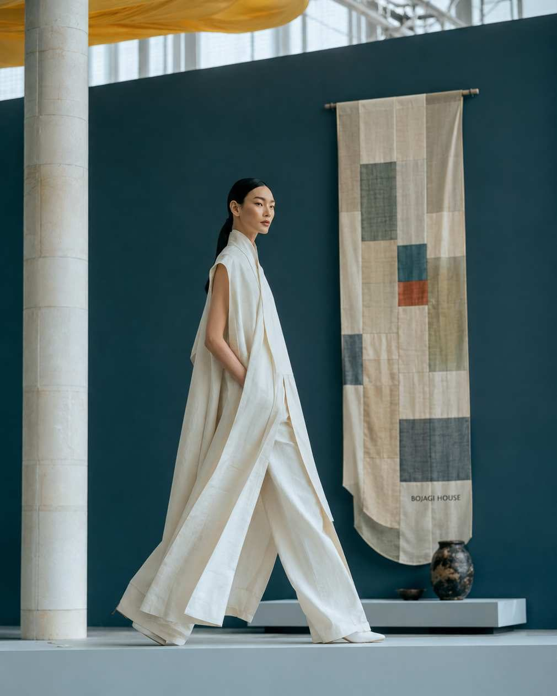
02무엇을 만드나
화려한 패치워크가 아니라,
여백 위의 한 조각.
전통 색은 넓은 여백과 차분한 구성 위에 작은 조각으로만 나타납니다. 이 절제된 색 사용이 BOJAGI HOUSE를 더 정제되고 현대적인, 프리미엄한 브랜드로 만듭니다.
- 70%Ramie White모시 흰빛
- 10%Muted Red절제된 적색
- 8%Dusty Indigo바랜 쪽빛
- 5%Gardenia치자빛
- 7%Ink / Material먹과 소재
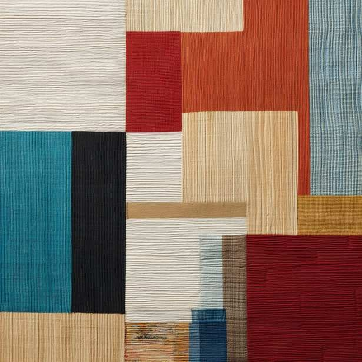
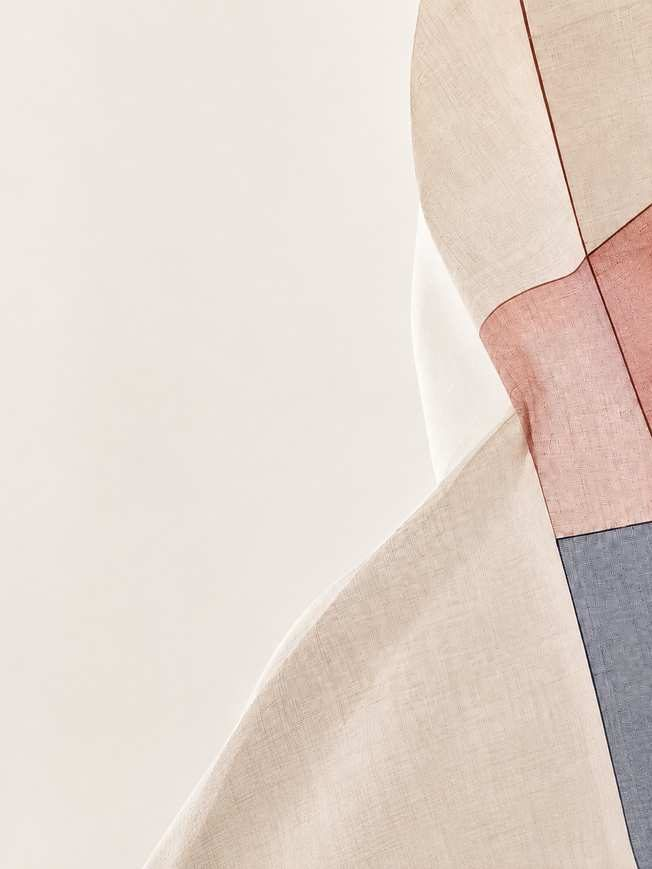
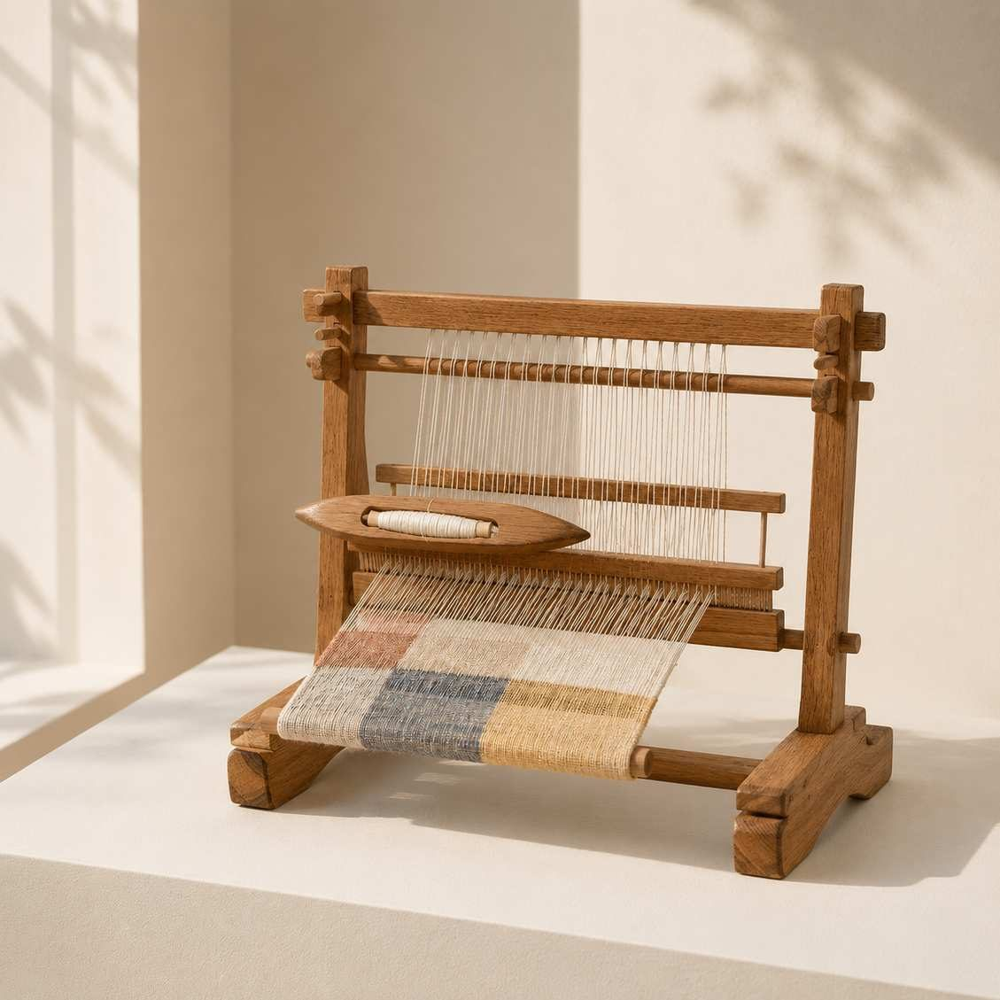
03하이라이트
창업 로드맵과
사업화 계획.
부산에서 시작해, 온라인으로 세계와 만납니다.
-
2026
김도연 대표 창업
사업 아이디어를 구체화하고 확정해 상용화의 토대를 세웁니다.
-
2026
상표 출원 · 공식 온라인 스토어
상표 등록을 준비하고 공식 온라인 스토어를 엽니다.
-
2026.12
오프라인 매장 오픈
브랜드를 직접 경험할 수 있는 첫 오프라인 공간을 엽니다.
-
2027 상반기
미국 · 일본 온라인 판매망
미국과 일본의 온라인 판매 네트워크를 엽니다.
-
2027
해외 온라인 본격 판매
해외 온라인 채널을 통한 본격적인 물량 판매를 시작합니다.
-
2027
해외 전시 · 글로벌 트레이드쇼
해외 전시와 글로벌 트레이드쇼에 참가해 브랜드를 알립니다.
04프로젝트 포트폴리오
조각이 사물이 되는
열 가지 방식.
이미지를 누르면 크게 볼 수 있습니다.
05오늘로 옮기기
유산 연구
한국의 문화유산을 오늘과 잇습니다.
박물관에 남은 조각보와 전통 공예를 연구하고, 그 원리를 현대의 소재와 쓰임으로 옮깁니다. 모양을 그대로 베끼는 것이 아니라, 잇고 감싸는 방식 자체를 오늘의 언어로 다시 씁니다.
06머무를 자리
빛과 기하, 그리고
이어짐의 건축.
BOJAGI HOUSE는 한국의 유산을 빛과 기하, 공간의 연결로 표현하는 현대적 문화 파빌리온을 지향합니다. 거대한 관문은 보자기의 접힌 면을 닮았고, 깊은 붉은색 내부는 한국 전통 색을 정제된 방식으로 다시 해석합니다.
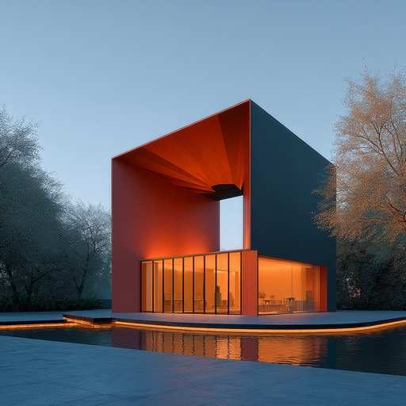
절제된 석재 볼륨과 투명한 유리, 긴 선의 반사 수경이 채움과 비움, 전통과 현대가 함께 놓인 고요한 구성을 만듭니다.
이 건축은 한옥을 그대로 옮기지 않습니다. 마당과 액자처럼 걸리는 풍경, 리듬, 자연과의 연결이라는 한옥의 원리를 현대의 언어로 번역합니다. 물과 따뜻한 빛, 열린 통로와 신중하게 다룬 여백이 방문자를 고요한 경험의 순서로 이끌고, 그렇게 BOJAGI HOUSE는 공예와 문화, 오늘의 생활이 만나는 장소가 됩니다.
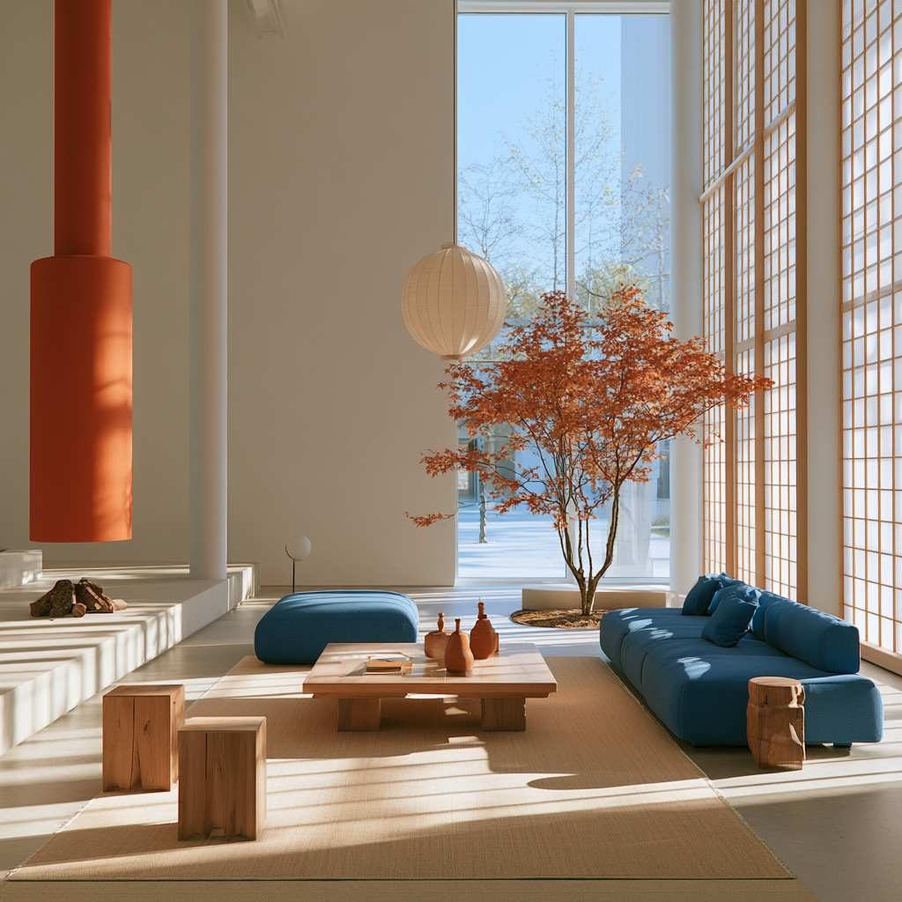
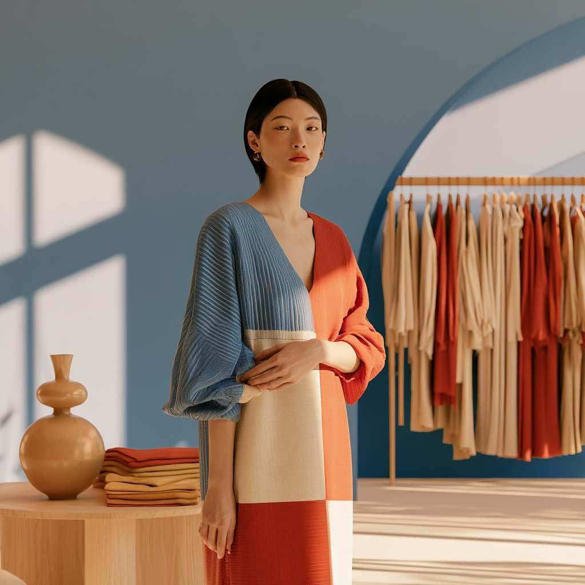
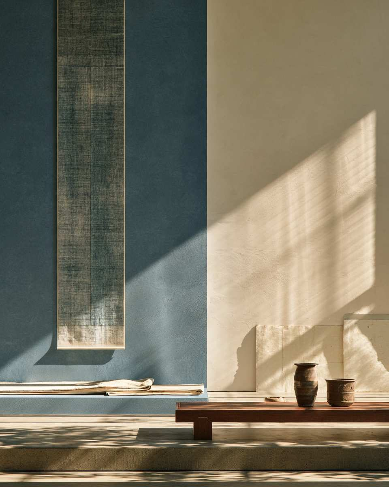
07문의
부산에서 시작해,
세계로 펼쳐집니다.
조각을 이어 세계를 감쌉니다.
- 주소
- 123 Anywhere St.,
Busan City, ST 12345 - 연락처
- +82 10-8961-3327
※ 주소와 채널 링크는 자료에 적힌 정보 그대로입니다. 실제 정보로 바꿔 사용하세요.